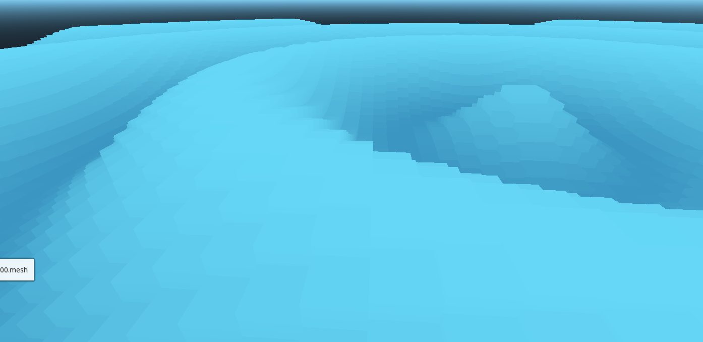
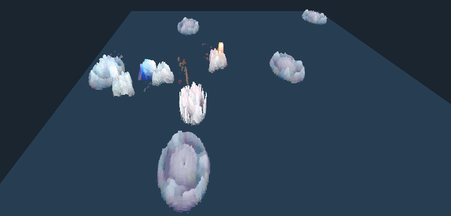

Pin Table
Summary
Date
2018 - August (two weeks)
Tech
Godot Engine
| Date | 2018 - August (two weeks) |
| Tech | Godot Engine |
Pin table effect recreated in Godot Engine with vertex and fragment shader. Includes a mesh generator to create tables of custom sizes.
- Customize size, number of pins, and pin shapes directly inside the editor
- Shader based effect keeps the CPU free
- This implementation is visual only (no collisions), but the concept can be easily applied to physics
Download
The code can be found on my GitLab.
Context
 This project was inspired by the MIT's TRANSFORM technology. The concept in itself is quite simple : have a matrix of pins move up and down in unison to create shapes.
This project was inspired by the MIT's TRANSFORM technology. The concept in itself is quite simple : have a matrix of pins move up and down in unison to create shapes.
The geometry used in the project is created via scripting. Each pin type (cube / hexagon) is hardcoded : vertices and UVs are specified in code, the normals are generated internally by Godot. The mesh generation is a bit slow (a few seconds for a 500*500 table), so I added the option to export the generated mesh as a Godot resource.
The shaders are pretty straightforward. The vertex shader displaces the top vertices of each individual pin. The displacement can be computed mathematically or read from a texture. The fragment shader just updates the color of the pin. The only notable trick to this is that the uvs of all vertices of a pin are collapsed in a single point. This gives a nice mosaic effect to the colors.
From that point it becomes trivial to display anything on a pin table. Even videos, as you can see from this reference to my earlier Genetic AI project.